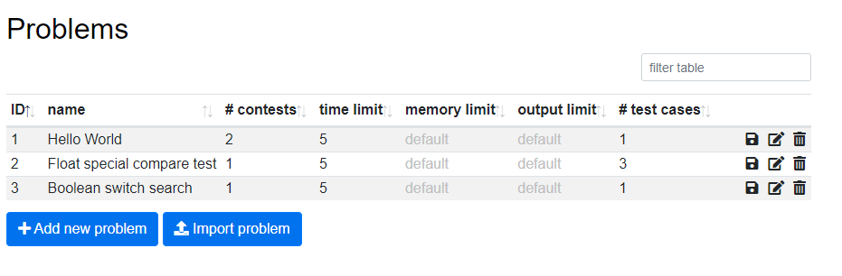
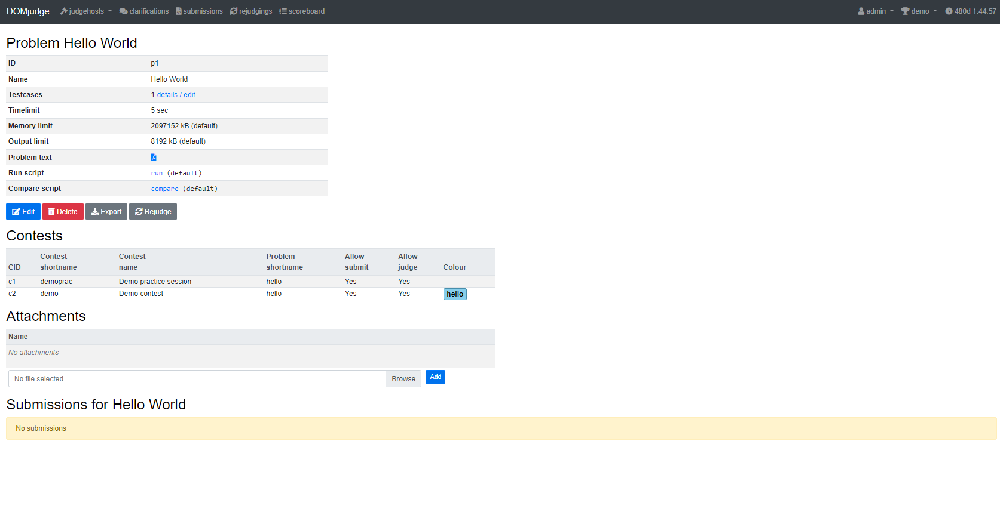

Domjudge Admin
啟動 server
環境
請先確認有安裝 docker 和 docker-compose
generate.py生成docker-compose.yml，-j調整Judgehost的數量（預設為 ）。
1 2 3 4 | |
- 檢查是否成功開啟，這時候
domjudge/judgehost:latest開啟失敗是正確的
1 2 3 4 5 | |
- 取得
admin密碼
1 | |
- 登入 domjudge，可看到
jury頁面。
設定 judgehost
- 這時候
.docker-compose.yml中的 judgehost 密碼和 domjudge 的 judgehost 密碼不同，必須一致 judgehost container 才會正確啟動。到jury頁面點擊Users進入帳號管理頁面，編輯judgehost的帳號，將密碼改成.docker-compose.yml中的 judgehost 密碼。

- 重啟 judgehost，在
jury頁面點擊Judgehosts進入 judgehost 管理頁面，可以看到 judgehost 正常開啟（status 為綠色勾勾）。
1 | |
管理帳號
在 jury 介面有 Users 和 Teams 兩個選項，Users 是登入的帳號，Teams 是提交 submission 的隊伍。
新增帳號
在 jury 頁面點擊 Users 進入帳號管理頁面，點擊 Add new user 按鈕進入新增帳號頁面，主要欄位說明如下：

- Username：登入帳號。
- Full name：名稱，只有管理員看的到，用來識別帳號持有人。
- Email：電子郵件。
- Password：登入密碼。
- IP address：限定登入 IP（不確定）。
- Enabled：使否啟用帳號。
- Team：帳號對應的 Team。
- Roles：帳號權限，一個帳號可以有多個 Role。
- Administrative User：管理所有權限，除了不能提交 Submission。
- Jury User：管理 Submission。
- Team Member：提交 Submission。
在 jury 頁面點擊 Teams 進入隊伍管理頁面，點擊 Add new team 按鈕進入新增帳號頁面，主要欄位說明如下：

- Team name：隊伍名稱
- Category：隊伍類別，一般如果沒特別需求，設成
Participants即可。 - Enabled：是否啟用隊伍。
- Add user to this team：team 對應的帳號。
匯入 .tsv 檔
需要一次新增大量 user 和 teams，可以將資料整理成 .tsv 檔 1 2，在 jury 頁面點擊 Import / export 進入匯入匯出頁面，找到 Teams & groups 區塊匯入 .tsv 檔，先匯入 teams.tsv，再匯入 accounts.tsv。
-
teams.tsv格式1 2
teams 1 team number external_ID group_id team_name institution_name institution_short_name country_code -
accounts.tsv格式1 2
accounts 1 account_type fullname username password- 如果設 Role 為
team的帳號，其username為team-{tid}， 那麼系統會自動連結 ID 為tid的team，因此採用上傳.tsv檔方式新增帳號，會先上傳teams.tsv再上傳accounts.tsv。
- 如果設 Role 為
開放自行註冊
在 jury 頁面點擊 Team Categories 進入隊伍類別管理頁面，可調整隊伍分類，隊伍有一個屬性為 Allow self-registration，設成 Yes 可開放給使用者自行註冊用。
管理比賽
在 jury 頁面點擊 Contests 進入比賽管理頁面，可以看到目前進行比賽狀態，以及所有比賽總覽，點擊 Add new contest 按鈕進入新增帳號頁面，主要欄位說明如下：
- Shortname：比賽縮寫，用於右上角的切換選單。
- Name：比賽名稱。
- Activate time：比賽可以被
team看見的時間，要早於 jury submission 提交的時間。 - Start time、End time：比賽開始的時間。
- Scoreboard freeze time、Scoreboard unfreeze time：記分板停止更新和解除停止更新的時間，非必填。
- Deactivate time：比賽隱藏的時間，非必填。
- Enable public scoreboard：是否要公開記分板，要是不想要在準備的時候(例如測試賽)被知道題目內容，選擇
No。 - Enable contest：使否啟用比賽，當不起用的時候，所有
team無法看到比賽，judgeing 也會停止。 - 題目列表：按列表右邊的
+，主要欄位如下：- Problem：新增已有題目。
- Short name：題目縮寫。
- Colour：題目代表顏色，非必填。
管理題目
有兩種辦法，手動輸入和匯入壓縮檔，兩種方式可交互使用。

手動輸入
在 jury 頁面點擊 Problems 進入題目管理頁面，點選 Add new problem 進入新增題目頁面，主要欄位說明如下：
- Name：題目名稱。
- Timelimit：程式執行時間限制。
- Memlimit：程式執行記憶體限制。
- Outputlimit：輸出大小限制。
- Problem text：題目說明檔(pdf,html,txt)。
- Run script：（編譯和）執行程式碼的腳本。
- Compare script：判斷輸出是否正確的腳本，需要 Special Judge 要自己寫腳本。
- Compare script arguments：Compare script 的參數 4。
float_tolerance E：容許跟答案相差 ， 是合法的浮點數表示，例如：。case_sensitive：大小寫要一致，Domjudge 是寬鬆比對，預設輸出大寫或小寫不會影響答案。space_change_sensitive：空格數量要一致，Domjudge 是寬鬆比對，預設是多或少輸出空白無異。
設定好題目，會轉移到題目資訊頁，會顯示題目設定、被哪些比賽使用、相關附件以及提交紀錄。

點擊 Testcases 欄位的 details / edit 頁面進入上傳測資頁面。

每次可以選擇新增一筆測資或更新現有測資，測資有五種屬性：輸入檔、輸出檔、是否為範例測資、描述、圖片。選擇好要更新的檔案後，點擊 Submit all changes 上傳，輸入輸出檔有各自的 MD5 值，可用來判斷是否為不一樣的檔案。
匯入題目
將所有檔案壓縮成壓縮檔，在題目頁面點擊 Import problem，選擇壓縮檔以及比賽，如果有選擇其中一場比賽，除了題目會自動加入該場比賽，壓縮檔內的範例程式也會自動提交，詳細說明請參考 這裡，
如果壓縮檔內包含範例程式，帳號必須指定一個 Team，範例測資才會提交到相對應的比賽。
problem.ini 的格式為 key=value，包含下方列出的項目 3，最基本的寫法包含 name 和 timelimit 2。
name：題目名稱。allow_submit：是否開放提交。allow_judge：提否開放 Judge。timelimit：程式執行時間限制。special_run：Special run script 的 ID。special_compare：Special compare script 的 ID。points：分數，預設為 。color：題目代表顏色 (CSS)。
範例程式放在資料夾 submissions 相對應的子資料夾 4：
accecpted：預設結果correct的程式。wrong_answer：預設結果wrong-answer的程式。time_limit_exceeded：預設結果time-limit的程式。run_time_error：預設結果runtime-error的程式。
例如：1.cpp 預設結果是 correct，路徑為 submissions/accecpted/1.cpp。
藉由壓縮檔上傳的範例程式稱為 jury solution，jury solution 用來檢查測資是否正確，到 jury 頁面點選 Judging verifier，讓系統自動判斷 jury solution 的結果是否和預期的一樣，再到 jury 頁面點選 Submissions，查看 verified 欄位，如果符合預期結果會顯示 yes。
測資放在 data 資料夾，分成公開測資和隱藏測資，分別放在 data/sample 和 data/secret，輸入輸出檔同名，輸入檔為 .in，輸出檔為 .out。
修改題目
在題目頁面，點擊對應題目的鉛筆按鈕，進入編輯題目頁面，編輯題目頁面和新增題目頁面相似，大致上多了題目 ID、編輯測資和匯入壓縮檔三個部分。
如果選擇匯入壓縮檔方式更新題目，測資和範例程式會新增而非覆蓋。